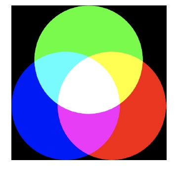

It turns out that all of Processing’s colour-related functions we saw when using grayscale have an RGB colour version as well. For instance, if we want to set the canvas background to some RGB
colour, we can do so with the background() function:

Notice that the function name background() is the same as when we called it with a grayscale value, but this time we provide three arguments instead of just one. You might think this is at odds with our earlier statement that “nothing in a computer program can be ambiguous,” but it isn’t. When we make this function call, Processing looks through all of the functions it knows about and asks itself, “can I find a function called background() that has exactly three parameters”? It is the function name in combination with the number of parameters that allow Processing uniquely to identify the correct function definition to run.
The stroke() and fill() functions, and indeed all Processing functions that involve colour, work the same way and are capable of using either grayscale or RGB colour based on the number of arguments provided when calling the function.